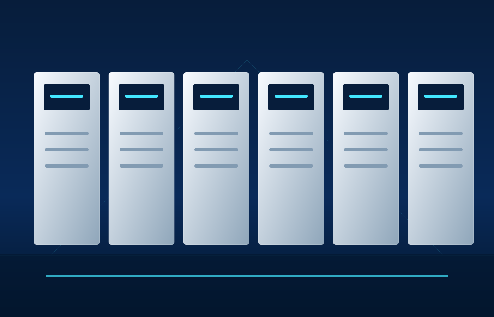
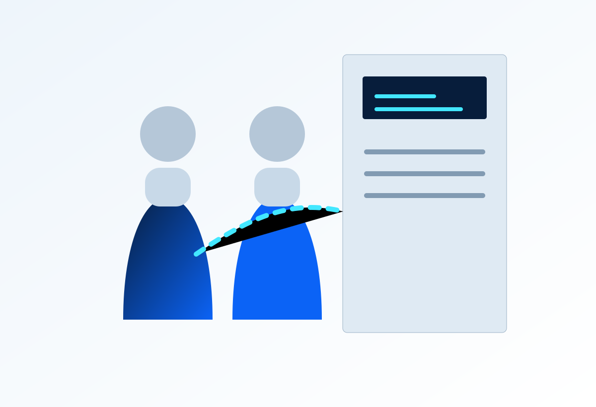
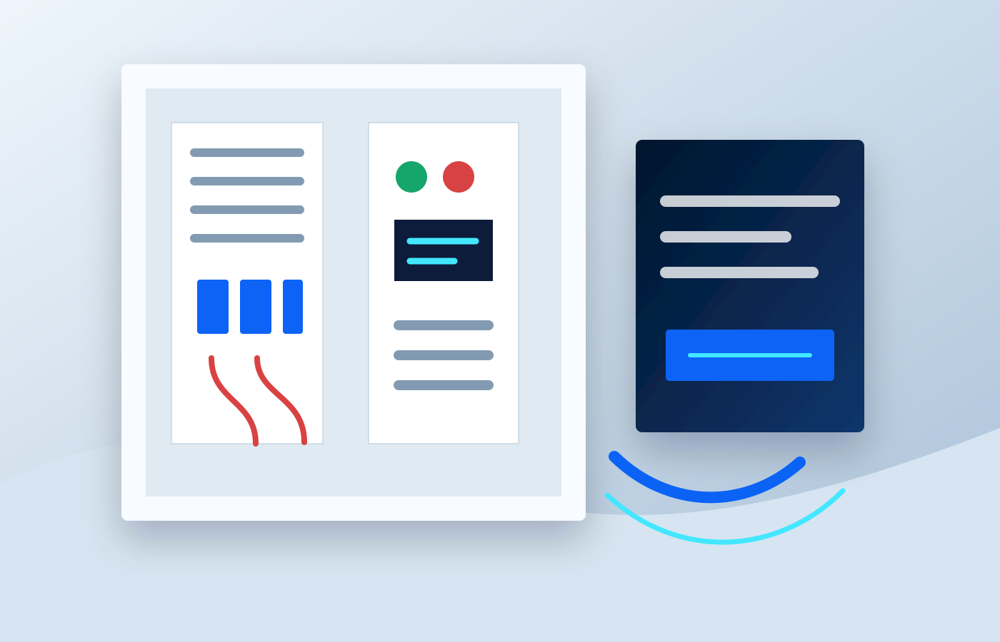
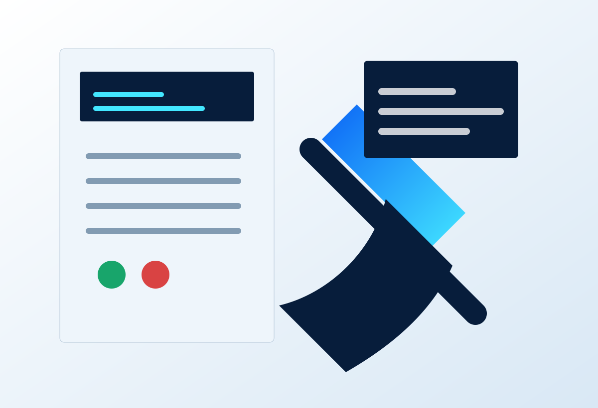

Misyonumuz
Elektrik ve otomasyon altyapılarında güvenli, düzenli, sürdürülebilir ve performans odaklı çözümler üreterek işletmelerin operasyon sürekliliğine katkı sağlamak.
TeknoPano; pano sistemleri, tesisat dağıtım, arıza onarım ve endüstriyel otomasyon projelerinde sahayı iyi okuyan, temiz teslimat standardı olan bir teknik çözüm ekibidir.
TeknoPano, elektrik pano ve otomasyon ihtiyaçlarını sadece montaj işi olarak görmez. Yük analizi, komponent seçimi, kablo düzeni, güvenlik, devreye alma ve bakım planı aynı bütünün parçalarıdır.
Firmamız; üretim alanları, atölyeler, ticari tesisler ve makine parkurlarında ihtiyaç duyulan pano kurulum, arıza tespiti, tesisat onarım ve enerji dağıtım çözümlerini profesyonel süreç yönetimiyle sunar.

Elektrik ve otomasyon altyapılarında güvenli, düzenli, sürdürülebilir ve performans odaklı çözümler üreterek işletmelerin operasyon sürekliliğine katkı sağlamak.
İstanbul'da endüstriyel pano, enerji dağıtım ve otomasyon projelerinde premium hizmet standardı ile akla gelen güvenilir teknik çözüm markalarından biri olmak.
TeknoPano'nun kurumsal ilerleyişi; daha düzenli proje yönetimi, daha yüksek güvenlik standardı ve daha güçlü teknik servis odağıyla şekillenir.
Elektrik tesisatı, arıza tespiti ve pano revizyon işlerinde yoğun saha deneyimi kazanıldı.
Dağıtım panoları, kompanzasyon çözümleri ve enerji odası uygulamaları kurumsal hizmet yapısına alındı.
PLC, sensör, sürücü ve kontrol sistemleriyle endüstriyel otomasyon projeleri genişletildi.
Keşif, raporlama, test ve bakım süreçleri tek çatı altında daha hızlı ve izlenebilir hale getirildi.
Proje keşfinden devreye almaya kadar her iş, doğru ekip rolüyle ilerler.

Yük analizi, malzeme planı, pano mimarisi ve iş akışı netleştirilir.

Kablolama, pano içi düzen, etiketleme ve güvenlik kontrolleri yapılır.

Arıza tespiti, bakım planı ve teslim sonrası teknik destek sağlanır.